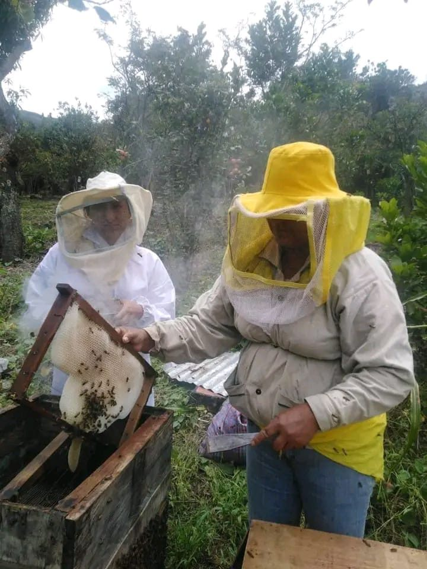
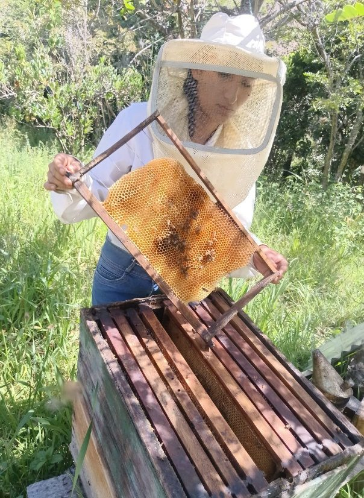

🍹 Descripción
El néctar de aguaymanto es una bebida elaborada a base de la pulpa del aguaymanto (Physalis peruviana), fruta nativa de los Andes peruanos. Se caracteriza por su sabor agridulce, aroma agradable y color amarillo-anaranjado. Contiene naturalmente vitamina C, carotenoides, fibra y minerales como fósforo, hierro y calcio.
📍 ¿De dónde vengo?
El aguaymanto utilizado para elaborar este producto proviene de la localidad de Llacón, y la miel de abeja de la localidad de Macha distrito de Santa María del Valle, Huánuco.


Cosechando la miel de abeja
👩🌾 ¿Quién me produce?
Soy elaborado por la emprendedora Luz Eunice Paucar Figueredo, quien transforma la producción local de aguaymanto en una bebida de calidad, agregando valor a los productos de la agricultura familiar.
🌱 ¿Cómo me producen?
Primero se cosecha el aguaymanto maduro y se realiza la selección y limpieza de los frutos. Luego se procesa para obtener la pulpa, se formula el néctar y se incorpora caña de azúcar como endulzante. Finalmente, se realiza el envasado y almacenamiento bajo condiciones adecuadas de higiene e inocuidad.
⭐ ¿Cuáles son mis beneficios?
- Aporto vitamina C y carotenoides, compuestos de interés nutricional y antioxidante.
- Contribuyo a una alimentación variada y saludable.
- Permito disfrutar del aguaymanto en una presentación práctica y agradable.
- Promuevo el consumo de frutas andinas y productos locales, apoyando a los productores y emprendimientos de nuestro departamento.
📷 Productor y marca

Agroindustrias Chupachos
Productos naturales de nuestra tierra
📞 Contacto
Teléfono: 931 266 103